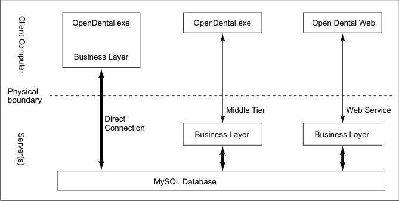

Middle Tier
See Advanced Topics.
The Middle Tier is an option for Multiple Locations that isolates the database, improving speed and security by preventing client workstations from directly accessing the database. The server program sits between the database and the client machines. Workstations are ordinary thick clients running the full Windows version of Open Dental. Middle Tier is a useful option for large local networks that might be shared with non-users of Open Dental (like a college campus or hospital). Middle Tier also supports the usage of Security Certificates for off site or self-hosted cloud solutions.
This diagram explains the 3-tier architecture used in enterprise settings.
- The business layer can be on the same physical computer as the database or on a dedicated server.
- The large arrows represent chatty connections.
- The thin arrows represent the slow connections for which the program has been optimized. Fewer calls are made across the slow connections.
Speed: The goal is to have only one call to the server for each page of display on the screen. This single call will return a single dataset (group of tables) which is as small as possible. Eliminating multiple calls reduces latency (roundtrip time) issues, such as when connecting across a satellite connection. Keeping the result set small helps the program remain responsive even when the connection is slow (e.g., a dial-up connection).
Security: An advantage of using a Middle Tier is increased security. In a direct connection, the MySQL username and password must be stored on the client computer. But with a Middle Tier, the client doesn't need access to the MySQL username and password. There is still not any security for the Paths if using local or network folders. Each client must still have access to a shared OpenDentImages folder to view items in the Imaging Module. There are a few options:
- Local Access: If only a single location uses Middle Tier (e.g., as an added security measure), then providing normal local access is a solid option.
- Multiple Location Access: It is best to replicate the files (e.g., DFS replication) or access the OpenDentImages folder via VPN connection. This helps prevent inconsistencies when storing images and documents.
Although it is not shown above, multiple clients can connect through either of the two methods and both connection methods can be used simultaneously. In fact, a direct connection is required when updating versions, and this requirement is satisfied by running the OpenDental.exe directly on the Middle Tier server.
See Middle Tier Installation for more information.